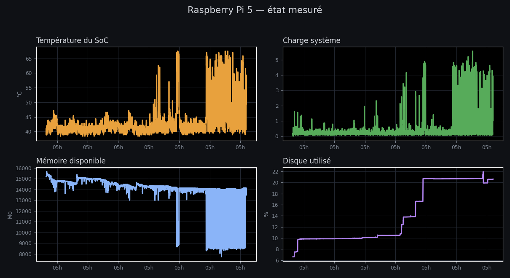

Preuve — Athéna Pi
État réel du Pi et de ses services, relevé à la construction de la page.
Ce qui est exécuté
Le dernier relevé de santé du Pi, la liste des timers, et le dépôt public. Les tests de la couche tournent eux aussi à la construction de la page.
Ce qui est compté
Le nombre de relevés de santé en base. C’est le meilleur indicateur de longévité du système : il augmente d’un toutes les minutes.
Les limites
La page de statut reste en boucle locale. Rien n’est exposé sur Internet, donc rien de ce qui est montré ici n’est joignable depuis l’extérieur.
Tests
tests/test_sante.py
12 tests — OK
python3 -m unittest discover -s tests -q
USDC/Ethereum ignoré : RPC indisponible
USDC/Base ignoré : pop from empty list
USDC/Ethereum ignoré : pop from empty list
usage: python3 -m unittest [-h] [--type {html,json,pdf,texte}] [--json]
[--timeout TIMEOUT] [--registre]
[--fichier FICHIER]
[url]
python3 -m unittest: error: une URL, ou --registre, est requis
----------------------------------------------------------------------
Ran 795 tests in 14.645s
OK (skipped=2)tests/test_surveillance.py
5 tests — OK
python3 -m unittest discover -s tests -q
USDC/Ethereum ignoré : RPC indisponible
USDC/Base ignoré : pop from empty list
USDC/Ethereum ignoré : pop from empty list
usage: python3 -m unittest [-h] [--type {html,json,pdf,texte}] [--json]
[--timeout TIMEOUT] [--registre]
[--fichier FICHIER]
[url]
python3 -m unittest: error: une URL, ou --registre, est requis
----------------------------------------------------------------------
Ran 795 tests in 14.675s
OK (skipped=2)Compteurs
| Compteurs | valeur |
|---|---|
| Relevés de santé en base | 9346 |
Commandes
Dernier relevé de santé du Pi
python3 sys/health_status.py
throttled 0x0
tension cœur 0.8325 V
uptime 139.7 h charge 0.75
mémoire dispo 14051.8 Mo zram 137.9 Mo
disque 20.63 % (24 h max 21.94 %)
unités en échec 0 wlan -60.0 dBm ntp oui
échantillons 24 h : 1377 événements throttle : 0
alertes récentes :
2026-11-24T09:12:43-05:00 failed_units 1 unité(s) en échec
2026-11-21T18:55:03-05:00 failed_units 1 unité(s) en échec
2026-11-18T21:36:05-05:00 failed_units 1 unité(s) en échec
2026-11-18T15:46:54-05:00 ntp_unsynced NTP non synchroniséTimers Athéna
systemctl list-timers 'athena-*' --no-pager
…
LAST PASSED UNIT ACTIVATES
Wed 2026-11-25 11:14:47 EST 29s Wed 2026-11-25 11:13:47 EST 30s ago athena-health.timer athena-health.service
Wed 2026-11-25 11:15:00 EST 41s Wed 2026-11-25 11:12:01 EST 2min 16s ago athena-flux.timer athena-flux.service
Wed 2026-11-25 11:21:33 EST 7min Wed 2026-11-25 11:06:33 EST 7min ago athena-gardien.timer athena-gardien.service
Wed 2026-11-25 11:54:01 EST 39min Wed 2026-11-25 09:54:01 EST 1h 20min ago athena-git-sync.timer athena-git-sync.service
Wed 2026-11-25 12:00:00 EST 45min Wed 2026-11-25 11:00:01 EST 14min ago athena-llm-tourne.timer athena-llm-tourne.service
Thu 2026-11-26 03:17:00 EST 16h Wed 2026-11-25 03:17:03 EST 7h ago athena-vault-backup.timer athena-vault-backup.service
Thu 2026-11-26 04:47:00 EST 17h Wed 2026-11-25 04:47:11 EST 6h ago athena-site-maintenance.timer athena-site-maintenance.service
Sun 2026-11-29 04:17:00 EST 3 days Sun 2026-11-22 04:17:11 EST 3 days ago athena-vault-doctor.timer athena-vault-doctor.service
8 timers listed.
Pass --all to see loaded but inactive timers, too.Dépôt public
git ls-remote https://github.com/Athena-rpi/athena-pi.git HEAD
ffe4dfdaac3e7296b6f9ee71a520630bc70b1d04 HEADImages

Ce qui n'est pas prouvé
- La page de statut reste en boucle locale : elle n'est pas exposée sur Internet.